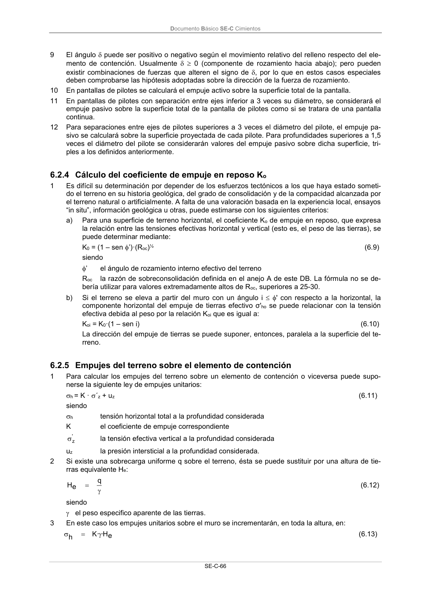

DB-SE-C Cimientos · edición 2019-12-20 · capa oficial
Documento DB-SE-C-oficial · SHA-256 del PDF a71133f4b0dca253e45ea3071c70f2a512354bcc5cd841bf89b1a502f567ac5e
Página física 71 de 165.
Copia fiel del PDF fuente · Fuente oficial
Ficha de la disposición en la fuente oficial
Formato: Texto de la página (Markdown)
Documento Básico SE-C Cimientos
SE-C-66
9
El ángulo puede ser positivo o negativo según el movimiento relativo del relleno respecto del ele-
mento de contención. Usualmente 0 (componente de rozamiento hacia abajo); pero pueden
existir combinaciones de fuerzas que alteren el signo de , por lo que en estos casos especiales
deben comprobarse las hipótesis adoptadas sobre la dirección de la fuerza de rozamiento.
10
En pantallas de pilotes se calculará el empuje activo sobre la superficie total de la pantalla.
11
En pantallas de pilotes con separación entre ejes inferior a 3 veces su diámetro, se considerará el
empuje pasivo sobre la superficie total de la pantalla de pilotes como si se tratara de una pantalla
continua.
12
Para separaciones entre ejes de pilotes superiores a 3 veces el diámetro del pilote, el empuje pa-
sivo se calculará sobre la superficie proyectada de cada pilote. Para profundidades superiores a 1,5
veces el diámetro del pilote se considerarán valores del empuje pasivo sobre dicha superficie, tri-
ples a los definidos anteriormente.
6.2.4 Cálculo del coeficiente de empuje en reposo Ko
1
Es difícil su determinación por depender de los esfuerzos tectónicos a los que haya estado someti-
do el terreno en su historia geológica, del grado de consolidación y de la compacidad alcanzada por
el terreno natural o artificialmente. A falta de una valoración basada en la experiencia local, ensayos
“in situ”, información geológica u otras, puede estimarse con los siguientes criterios:
a)
Para una superficie de terreno horizontal, el coeficiente Ko de empuje en reposo, que expresa
la relación entre las tensiones efectivas horizontal y vertical (esto es, el peso de las tierras), se
puede determinar mediante:
K0 = (1 – sen ’)·(Roc)½
(6.9)
siendo
’
el ángulo de rozamiento interno efectivo del terreno
Roc la razón de sobreconsolidación definida en el anejo A de este DB. La fórmula no se de-
bería utilizar para valores extremadamente altos de Roc, superiores a 25-30.
b)
Si el terreno se eleva a partir del muro con un ángulo i ' con respecto a la horizontal, la
componente horizontal del empuje de tierras efectivo σ'ho se puede relacionar con la tensión
efectiva debida al peso por la relación Koi que es igual a:
Koi = K0·(1 – sen i)
(6.10)
La dirección del empuje de tierras se puede suponer, entonces, paralela a la superficie del te-
rreno.
6.2.5 Empujes del terreno sobre el elemento de contención
1
Para calcular los empujes del terreno sobre un elemento de contención o viceversa puede supo-
nerse la siguiente ley de empujes unitarios:
h = K · ´z + uz
(6.11)
siendo
h
tensión horizontal total a la profundidad considerada
K
el coeficiente de empuje correspondiente
'
z
la tensión efectiva vertical a la profundidad considerada
uz
la presión intersticial a la profundidad considerada.
2
Si existe una sobrecarga uniforme q sobre el terreno, ésta se puede sustituir por una altura de tie-
rras equivalente He:
q
e
H
(6.12)
siendo
el peso especifico aparente de las tierras.
3
En este caso los empujes unitarios sobre el muro se incrementarán, en toda la altura, en:
e
H
·
·
K
h
(6.13)
